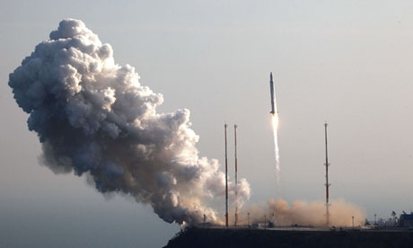
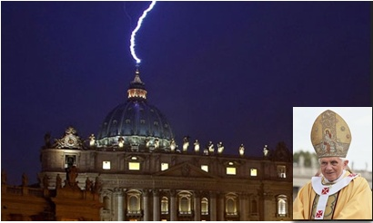
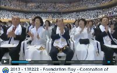
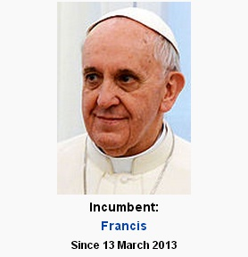
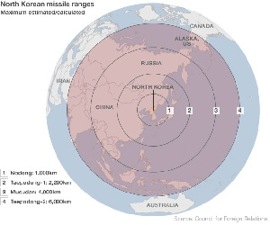

2013
2013
Search Result for 2013 tparents.org[Fortsättning på Heung Jin Nims budskap från 1 januari 2002.]
Sanne Far: Det är likt precis som efter andra världskriget (se 1946), så detta är en
avgörande tid (2002) och vi måste fullborda Guds vilja senast 2010 eller 2012. Ni måste migrera tillbaka till er
hemstad och hitta vår egen nation, särskilt i det andra Israel, Amerika. Ledare kommer att ställa sig upp, i FN,
och vi måste förnya FN, där vi har arbetat de senaste åren.
Nu är tiden mogen; tiden är inne, att återvända till den ursprungliga nationen, med det utvalda folket i
centrum.
Alla sataniska nationer borde stödja den sanna nationen.
Ref:5 april 2002
30 jan 2013

Sydkorea sänder upp sin första satellit, veckor efter en liknande lansering av Nordkorea.
7 jan/9 feb 2013
Viktiga förändringar
1. Tilltala "Gud" som "Himelske förälder"
(1) Från och med nu, när vi inleder en bönerapport, bör vi börja med att tilltala Gud och Sanna föräldrar som
"Himmelska förälder, älskade Sanna föräldrar över himmel, jord och mänsklighet."
(2) "Den sanna Guds dag" skall nu kallas "Himmelska Förälderns dag"
(3) Ändra årets namn från "Cheon-gi" till "Cheon Il Guk"
(4) Det "fjärde året av Cheon-gi" skall kallas "Cheon Il Guks första år".
(5) Den himmelska kalendern kommer att fortsätta användas men ska nu återges som "1.1 enligt den himmelska
kalendern under det första året av Cheon Il Guk" istället för "1.1 enligt den himmelska kalendern under det
fjärde året av Cheon-gi"."
2. Ändringar gjorda i de tre hurraropen för eok-mansei, uppmaningen att offra gyeongbae och familjelöftet
1) Three cheers of eok-mansei should now be made for:
"Eok-mansei for the beloved Heavenly Parent!
Eok-mansei for the victorious True Parents of Heaven, Earth and Humankind!
Eok-mansei for the establishment of Cheon Il Guk!"
2) The following call should be used when doing gyeongbae:
"Gyeongbae to the True Parents of Heaven, Earth and Humankind!"
3) Changes made to the Family Pledge
(1) Verses 2, 4, and 6: References to "God" should be changed to "the Heavenly Parent"
(2) Verse 8: "Completed Testament Age" should be changed to "Era of Cheon Il Guk" 1) Tre hurrarop av eok-mansei
bör nu göras för:
"Eok-mansei för den älskade Himmelske föräldern!"
"Eok-mansei för de segrande sanna föräldrarna till himmel, jord och mänsklighet!"
"Eok-mansei för upprättandet av Cheon Il Guk!"
2) Följande inledning bör användas när man gör gyeongbae:
"Gyeongbae till Sanna föräldrar över himmel, jord och mänsklighet!"
3) Ändringar gjorda i familjelöftet
(1) Verserna 2, 4 och 6: Hänvisningar till "Gud" bör ändras till "Himmelske förälder"
(2) Vers 8: "Det fullbordade testamentets tidsålder" bör ändras till "Cheon Il Guks era"
Cheon Il Guk är en förkortning av Cheonju Tongil Pyeonghwa Guk; Nationen av fred och enighet över himmel och jord; i kristna termer himmelriket på jorden.
12 Feb 2013 Påven ABDIKERAR! (av hälsoskäl).
1:a päven att abdikera på 600 år.

12 feb 2013Blixten slår ner i Vatikanens Sankt Peters katedral, bara timmar efter påvens abdikeringbesked.
17 febr 2013 Stor Välsignelse av 3500 par i SydKorea i Gapyeong öster om Seoul.


Grundandets dag 23 febr 2013



Video
http://www.tparents.org/library/unification/talks/anderson/Anderson-130217.pdf
EU accepterar en lag om homosexuella äktenskap. USA, England och Frankrike stöder detta med sina nationella
lagar.
2 mar 2013 Nordkorea och USA möts i basketboll.
Dennis Rodman, den tatuerade, läpp-pearsade förre NBA stjärnan, som inte bara haft ett möte med pres. Kim, utan
utropade honom en "vän för livet" medan de tittar på en basketmatch under vilken de två samtalade på engelska.
(Kims engelska sades vara begränsad.) I foton som har gått runt världen, syns de två männen skratta
tillsammans.
Source:
NYTimes 1 Mar 2013
13 mar 2013 Ny påve Franciscus från Argentina (första någonsin från Latinamerika)

"Den nye påven är en mycket ödmjuk man, "sade pastor Eduardo Mangiarotti, en argentinsk präst." Han åkte kollektivtrafik varje dag."
23 mar 2013 Två påvar möts. Första gången det sker på 600 år!
en profetia från 1100-talet har blivit rykande aktuell.
Profetian - kallad "Påvarnas profetia" - skrevs av det irländska helgonet Malachy som efter en resa till Rom
fick en uppenbarelse och skrev ner 112 kryptiska fraser som beskriver varje påve.
Den nya päven kommer att få siffran 112 - som enligt Malachy kommer bli den sista päven någonsin. Efter valet
kommer så småningom "staden med de sju kullarna förstöras och den fruktansvärde domaren kommer att döma folket".
MIRAKEL!
Otroligt olycka för en UC Välsignad medlem, hans bil förstörs och han överlevde mirakulöst!
Han tar alltid med sig bilden av TPHAE (True Parents of Heven and Earth) och har en exemplarisk välsignad
familj, han har alltid förkunnat om TPHAE på gator och torg.
Hans djupa tro och kärlek till Gud och TPHAE har verkligen räddat honom, Aju!!!
30 Mar 2013 Nordkorea förklarar 'krigstillstånd' med Sydkorea 
Men få tror att Nord-Korea skulle riskera fullt utvecklad konflikt. Det har tekniskt varit i krig med syd
alltsedan 1953 eftersom inget fredsavtal har undertecknats. Ett vapenstillestånd i slutet av Koreakriget blev
aldrig omvandlat till ett fullständig fredsfördrag.
/BBC
Om vi ser externt, finns det inget samband mellan Korea, USA och de andra länderna. Men om vi ser det från
Guds försyn, så var Koreakriget, kriget för att återupprätta det egna landet.
Återupprättandet(enande) av Korea blir huvudfreden för enandet av hela världen. Så allt hänger på
Korea.
Spiritual background to the Korean War
7 apr 2013 Tyska tidningen
Die Welt skriver om Hyung Jin Nim
som potentiell fredsmäklare i Nordkorea.
apr 2013 Dröm om Jesus och Sanne far i andliga världen
5 aug 2013
The Zealot: The Life and Times of Jesus of Nazareth by Reza Aslan, en bok skriven av en iransk-amerikan
som konverterade till kristendomen vid en ålder av 15. Aslans biografi om Jesus bygger på generationer av
tolkningar och vetenskapliga texter för att försöka förstå Jesus som individ, historisk och andlig varelse, och
att placera hans insatser och inflytande gentemot den turbulenta bakgrunden av hans tid. The Zealot noterades på
bästsäljarlistan i
New York Times i september 2013.
Världen: 8 okt Heavenly Calendar (10 november)
Typhoon Haiyan, den starkaste orkan som någonsin
registrerats i världshistorien, drabbade Filippinerna. Den lämnade bakom sig mer än 10 000 dödsfall, denna utbredda död och förstårelse är
omöjligt att ens bedåma och är på väg att snabbt bli en nationell katastrof.
5 dec 2013
Sydafrikanske svarte frihetslegenden och f.d. presidenten Nelson Mandela avlider 95 år gammal.
Böckerna Cheon Seong Gyeong och Pyeong Hwa Gyeong publiceras på koreanska.
Enligt mediala broder Pappalardo tog han emot budskap från SMM att negativ energi samlas på jorden som kan bryta
ut som en världs-sjukdom.
SMM skulle försöka motverka detta genom positiv energi från andevärlden. - se 2020 Corona-epedimin.